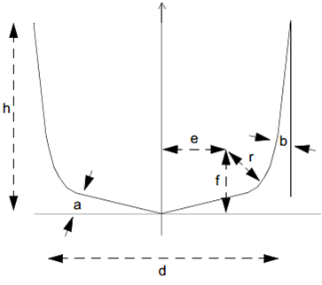

Tool and Holder Functions
Tool and holder functions provide control over the management and configuration of tools and their holders within the simulation. These functions support dynamic tool/holder creation, tool change sequences, color settings, and gouge testing.
Manage additional active tools
Indicates the start of a tool change sequence
Color definition for dynamic tools and holders
Indicates the end of a tool change sequence
Manage gouge testing status
Dynamic holder creation
Get pocket number associated with the tool
Dynamic tool creation
$FMSADDTOOL(...) |
Manage additional active tools Returns: Numeric |
\(\mathit{result} = \mathbf{\$FMSADDTOOL}\boldsymbol{(}\, toolaxis\_id\, \big[,pocket\_id\,\big] \begin{pmatrix} ,\! \begin{array}{l} part\_id \\ \mathbf{OFF} \end{array}\end{pmatrix} \boldsymbol{)}\)
This function identifies an additional cutting tool that operates in conjunction with the primary tool, using the same machine axes. It is typically used in machines with multiple spindles that machine duplicate parts simultaneously. The toolaxis_id or toolaxis_id/pocket_id pair specifies the additional tool to be activated or deactivated.
To activate a tool, provide a part_id indicating the part on which the tool’s movements should be applied. To deactivate a previously activated tool, specify OFF or use a value of 0 in place of the part_id.
$FMSBTC( ) |
Beginning tool change Returns: Numeric (always returns 1) |
\(\mathit{result} = \mathbf{\$FMSBTC}\boldsymbol{(} \; \boldsymbol{)}\)
This function is used to indicate the beginning of a tool change. When in continuous animation mode and the “Motion step during Tool Change” setting is active, the animation mode will switch to the Motion Step format. The animation mode will switch back to continuous when the $FMSETC function is later called to indicate the end of the tool change.
$FMSCOLR(...) |
Define the material properties Returns: Numeric (always returns 1) |
\(\begin{array}{l} \rule{0pt}{2.5ex} \mathit{result} = \mathbf{\$FMSCOLR}\boldsymbol{(}\, \mathbf{START}, name \,\boldsymbol{)} \\ \rule{0pt}{2.5ex} \mathit{result} = \mathbf{\$FMSCOLR}\boldsymbol{(}\, property, value\_list \,\boldsymbol{)} \\ \rule{0pt}{2.5ex} \mathit{result} = \mathbf{\$FMSCOLR}\boldsymbol{(}\, \mathbf{END} \,\boldsymbol{)} \end{array}\)
This function provides the ability to define the material properties of dynamically created tools, holders, parts and fixtures, using same functionality as can be found in the Simulation»Material dialog.
To define a color, first call $FMSCOLR(START,name) where name is a string constant or variable defining the name of the custom color. This name can subsequently be used in $FMSTOOL, $FMSHLD, $FMSPART and $FMSFIXTURE properties that take a color name.
Next, call $FMSCOLR(property,value_list) once for each color property to be defined, where the property name is specified using a string constant or variable containing the name of the property. Available properties and their parameter values are:
\(\mathit{result} = \mathbf{\$FMSCOLR}\boldsymbol{(}\, \mathbf{'AMBIENT\,'}, red, blue, green \,\boldsymbol{)}\)
The color of the environment. The red, green and blue parameters are values in the range 0-255. The default ambient color is black (0,0,0).
\(\mathit{result} = \mathbf{\$FMSCOLR}\boldsymbol{(}\, \mathbf{'DIFFUSE\,'}, red, blue, green \,\boldsymbol{)}\)
The color of the object. Default is black.
\(\mathit{result} = \mathbf{\$FMSCOLR}\boldsymbol{(}\, \mathbf{'SPECULAR\,'}, red, blue, green \,\boldsymbol{)}\)
The color shown in reflections. Default is black.
\(\mathit{result} = \mathbf{\$FMSCOLR}\boldsymbol{(}\, \mathbf{'SHININESS\,'}, value \,\boldsymbol{)}\)
The degree of shininess in the range 0-100. Default is 0 (not shiny).
\(\mathit{result} = \mathbf{\$FMSCOLR}\boldsymbol{(}\, \mathbf{'TRANSPARENCY\,'}, value \,\boldsymbol{)}\)
The degree of transparency in the range 0-100. Default is 0 (opaque).
Lastly, call $FMSCOLR(END) to complete the color definition.
$FMSETC( ) |
End of a tool change Returns: (always returns 1) |
\(\mathit{result} = \mathbf{\$FMSETC}\boldsymbol{(} \; \boldsymbol{)}\)
This function is used to indicate the end of a tool change. When in continuous animation mode, and the “Motion step during Tool Change” setting is active, the animation mode will switch to the Motion Step format when the $FMSBTC function is called. The animation mode will switch back to continuous when the $FMSETC function is later called to indicate the end of the tool change.
$FMSGOUG(...) |
Returns the current gouge testing status Returns: Numeric |
\(\mathit{result} = \mathbf{\$FMSGOUGE}\boldsymbol{(} \big[\, n \,\big] \boldsymbol{)}\)
This function returns the current gouge testing status between the cutting portion of the tool and the part. A return value of 0 (zero) means gouge testing is disabled; a return value of 1 (one) means it is enabled.
Optionally, you can change the gouge testing status by specifying n: use 0 to disable testing, or 1 to enable it.
$FMSHLD(...) |
Holder properties Returns: Numeric, String or Sequence |
There are three forms of the $FMSHLD function. The first clears all holder definitions from the holder table. The second obtains holder information. The third creates new holder definitions.
Clear holder table
\(\mathit{result} = \mathbf{\$FMSHLD}\boldsymbol{(}\, \mathbf{CLEAR},\mathbf{ALL} \,\boldsymbol{)}\)
This function removes all holder definitions from the holder table. It always returns the value 1.
Get holder properties
\(\mathit{result} = \mathbf{\$FMSHLD}\boldsymbol{(}\, \mathbf{RETURN},\, 'holder\,',\, 'property \big[,property,...\big]\,' \,\boldsymbol{)}\)
This function returns requested properties of a holder where holder is a string constant or variable defining the name of the holder and properties is a string constant or variable defining a comma separated case insensitive list of properties to be returned. Returned holder properties can be either numeric values or strings. Multiple property values are returned as a sequence. Linear properties are returned in the current machine units.
The following holder properties can be queried:
property
Common holder properties
TYPE
1:profile, 2:generic
PARENT
Parent holder name string, blank if none
UNITS
Units of holder definition (informational) 1:inch, 25.4:mm
Profile holder properties
PT0
Spindle contact distance along holder axis
PT1
Tool contact distance along holder axis
Generic holder properties
ACTASAHEAD
Holder acts as a head for tool comp. purposes 0:no, 1:yes
SPINDLE
Sequence of xyz spindle contact distances from holder origin
SPINDLE.X
Spindle contact x-axis distance from holder origin
SPINDLE.Y
Spindle contact y-axis distance from holder origin
SPINDLE.Z
Spindle contact z-axis distance from holder origin
TOOL
Sequence of xyz tool contact distances from holder origin
TOOL.X
Tool contact x-axis distance from holder origin
TOOL.Y
Tool contact y-axis distance from holder origin
TOOL.Z
Tool contact z-axis distance from holder origin
TOOL.A
Tool rotation around x-axis relative to the holder tool contact point
TOOL.B
Tool rotation around y-axis relative to the holder tool contact point
TOOL.C
Tool rotation around z-axis relative to the holder tool contact point
Create new holder
\(\begin{array}{l} \rule{0pt}{2.5ex} \mathit{result} = \mathbf{\$FMSHLD}\boldsymbol{(}\, \mathbf{START}, name \,\boldsymbol{)} \\ \rule{0pt}{2.5ex} \mathit{result} = \mathbf{\$FMSHLD}\boldsymbol{(}\, property, value\_list \,\boldsymbol{)} \\ \rule{0pt}{2.5ex} \mathit{result} = \mathbf{\$FMSHLD}\boldsymbol{(}\, \mathbf{END} \,\boldsymbol{)} \end{array}\)
This function provides the ability to create a new holder. To create a holder, first call $FMSHLD(START,name) where name is a string constant or variable defining the name of the holder. This name can subsequently be used in the $FMSTOOL 'HOLDER' property.
Next, call $FMSHLD(property,value_list) once for each holder property to be defined, where the property name is specified using a string constant or variable containing the name of the property. Available properties and their parameter values are:
For profile holders:
\(\mathit{result} = \mathbf{\$FMSHLD}\boldsymbol{(}\, \mathbf{'REVOLVED\,'}, \mathit{profile} \,\big[,\! \mathit{crprofile} \,\big] \boldsymbol{)}\)
Specifies a “Profile” holder type. The profile is a sequence containing the xz values of the profile to be swept around a {0,0,1} axis. The optional crprofile is a sequence of corner radius values to apply to the corresponding vertices of the profile (trailing zero values can be omitted).
\(\mathit{result} = \mathbf{\$FMSHLD}\boldsymbol{(}\, \mathbf{'PT0\,'}, distance \,\boldsymbol{)}\)
Specifies the spindle contact point distance along the {0,0,1} holder axis. This is where the holder is attached to its parent. Default is zero.
\(\mathit{result} = \mathbf{\$FMSHLD}\boldsymbol{(}\, \mathbf{'PT1\,'}, distance \,\boldsymbol{)}\)
Specifies the tool contact point distance along the {0,0,1} holder axis. This is where the tool (or child holder) is attached to the holder. Default is zero.
For generic holders:
\(\mathit{result} = \mathbf{\$FMSHLD}\boldsymbol{(}\, \mathbf{'MATRIX\,'}, matrix \,\boldsymbol{)}\)
Specifies the position and orientation of the holder geometry (mesh or extruded) using a 12 element matrix sequence. The matrix must be defined before the STLs to which it applies.
\(\mathit{result} = \mathbf{\$FMSHLD}\boldsymbol{(}\, \mathbf{'STL\,'}, \mathit{filename} \,\boldsymbol{)}\)
Specifies a “Generic” mesh holder type. The filename is a string constant or variable specifying the ASCII STL file containing the mesh geometry of the holder.
\(\begin{array}{l} \rule{0pt}{2.5ex} \mathit{result} = \mathbf{\$FMSHLD}\boldsymbol{(}\, \mathbf{'PROFILE\,'}, \mathit{profile} \,\big[,\! \mathit{crprofile} \,\big] \boldsymbol{)} \\ \rule{0pt}{2.5ex} \mathit{result} = \mathbf{\$FMSHLD}\boldsymbol{(}\, \mathbf{'EXTRUDED\,'}, distance \,\boldsymbol{)} \end{array}\)
Specifies a “Generic” extruded holder type. The profile is a sequence containing the xy values of the holder profile to be extruded for the specified distance along the {0,0,1} holder axis. The optional crprofile is a sequence of corner radius values to apply to the corresponding vertices of the profile (trailing zero values can be omitted).
\(\mathit{result} = \mathbf{\$FMSHLD}\boldsymbol{(}\, \mathbf{'MATRIX\,'}, matrix \,\boldsymbol{)}\)
Specifies the position and orientation of the holder geometry (mesh or extruded) using a 12 element matrix sequence.
\(\mathit{result} = \mathbf{\$FMSHLD}\boldsymbol{(}\, \mathbf{'SPINDLE\,'}, x, y, z \,\boldsymbol{)}\)
Specifies the spindle contact xyz offset from the holder origin. This is where the holder is attached to its parent. Default is (0,0,0).
\(\mathit{result} = \mathbf{\$FMSHLD}\boldsymbol{(}\, \mathbf{'TOOL\,'}, x, y, z, a, b, c \,\boldsymbol{)}\)
Specifies the tool contact xyz offset from the holder origin and the tool abc orientation in degrees (a is rotation around the x-axis, b around the y-axis and c around the z-axis). This is where the tool (or child holder) is attached to the holder. Default is (0,0,0,0,0,0).
Common properties for all holders:
\(\mathit{result} = \mathbf{\$FMSHLD}\boldsymbol{(}\, \mathbf{'UNITS\,'}, value \,\boldsymbol{)}\)
Specifies the units of measure for the holder (1:inch, 25.4:mm). Default units are current machine units.
\(\mathit{result} = \mathbf{\$FMSHLD}\boldsymbol{(}\, \mathbf{'COLOR\,'}, colorname \,\boldsymbol{)}\)
Specifies the color of the holder, which must have previously been defined using the $FMSCOLR function.
\(\mathit{result} = \mathbf{\$FMSHLD}\boldsymbol{(}\, \mathbf{'PARENT\,'}, holdername \,\boldsymbol{)}\)
Specifies the name of another holder to which the current one is mated.
Lastly, call $FMSHLD(END) to complete the holder definition.
When creating holders, all three forms of the $FMSHLD function (START, property, and END) always return the value 1.
$FMSPCK(...) |
returns the component ID of the pocket associated with tool number Returns: Numeric |
\(\mathit{result} = \mathbf{\$FMSPCK}\boldsymbol{(}\, n \,\boldsymbol{)}\)
This function returns the numeric component ID of the pocket associated with tool number n, or zero if there is no associated pocket.
$FMSTOOL(...) |
Tools properties Returns: Numeric, String or Sequence |
There are four forms of the $FMSTOOL function. CLEAR clears all tool definitions from the tool table. RETURN obtains tool information. START-END creates new tool definitions. COPY creates a copy of an existing tool with a new id.
Clear tool table
\(\mathit{result} = \mathbf{\$FMSTOOL}\boldsymbol{(}\, \mathbf{CLEAR},\mathbf{ALL} \,\boldsymbol{)}\)
This function removes all tool definitions from the tool table. It always returns the value 1.
Get tool properties
\(\mathit{result} = \mathbf{\$FMSTOOL}\boldsymbol{(}\, \mathbf{RETURN},\, 'tool\,',\, 'property \big[,property,...\big]\,' \,\boldsymbol{)}\)
This function returns requested properties of a tool where tool is the tool number as defined in Virtual Machine and properties is a string constant or variable defining a comma separated case insensitive list of properties to be returned. Returned tool properties can be either numeric values or strings. Multiple property values are returned as a sequence. Linear properties are returned in the current machine units.
The following tool properties can be queried:
property
Common tool properties
NAME
Tool name string, blank if none
TYPE
1:mill, 2:lathe, 3:probe, 4:additive
SUBTYPE
Value varies depending on TYPE
GL
Sequence of xyz gage lengths
GL.X
X axis gage length
GL.Y
Y axis gage length
GL.Z
Z axis gage length
HOLDER
Holder name string, blank if none
TCD
Sequence of zero or more Diameter compensation offsets
TCF
Sequence of zero or more Fixture compensation offsets
TCL
Sequence of zero or more Length compensation offsets
UNITS
Units of holder definition (informational) 1:inch, 25.4:mm
Mill tool properties
SUBTYPE
1:end-mill, 2:ball, 3:bull, 4:drill, 5:apt, 6:profile, 7:generic
D
Tool diameter
R
Tool radius (D/2)
L
Tool length
FL
Flute length
CR
Corner radius
BA
Bottom angle (degrees)
SA
Side angle (degrees)
BO
Body offset
N
Number of flutes or teeth
SL
Shank length
SD
Shank diameter
LEFT
1:left-hand, 0:unknown, -1:right-hand
RIGHT
1:right-hand, 0:unknown, -1:left-hand
USAGE
1:finishing, 2:semi-finishing, 3:roughing
Lathe tool properties
SUBTYPE
1:round, 2:trigon, 3:diamond, 4:symmetric, 5:thread, 6:groove, 7:profile, 8:generic
R
Inscribed circle radius
D
Inscribed circle diameter (R*2)
J
Joint radius
H
Insert height
SA
Clearance (side) angle (degrees)
N
Number of sides
CR
Corner radius
A
Internal angle (degrees)
TW
Tooth width
TH
Tooth height
TO
Tooth offset
TC
Tooth clearance
LEFT
1:left-hand, 0:unknown, -1:right-hand
RIGHT
1:right-hand, 0:unknown, -1:left-hand
USAGE
1:finishing, 2:semi-finishing, 3:roughing
Probe tool properties
SUBTYPE
1:straight, 2:star, 3:generic
R
Probe tip radius
D
Probe tip diameter (R*2)
SL
Stylus length
SD
Stylus diameter
H
Height of star component
W
Width of star component
Additive tool properties
SUBTYPE
1:profile, 2:generic
Create new tool
\(\begin{array}{l} \vphantom{\Big[} \mathit{result} = \mathbf{\$FMSTOOL}\boldsymbol{(}\, \mathbf{START}, tool \,\Big[,pocket \,\big[,toolaxis\,\big]\Big] \boldsymbol{)} \\ \vphantom{\Big[} \mathit{result} = \mathbf{\$FMSTOOL}\boldsymbol{(}\, property, value\_list \,\boldsymbol{)} \\ \vphantom{\Big[} \mathit{result} = \mathbf{\$FMSTOOL}\boldsymbol{(}\, \mathbf{END} \,\boldsymbol{)} \end{array}\)
This function provides the ability to create a new tool. To create a tool, first call $FMSTOOL(START,tool,pocket) where tool is a numeric constant or variable defining the tool number and pocket is a numeric constant or variable defining the default pocket number on the machine. On machines having multiple tool holding devices, specify the optional toolaxis parameter to identify the tool-axis property of the pocket.
Next, call $FMSTOOL(property,value_list) once for each tool property to be defined, where the property name is specified using a string constant or variable containing the name of the property. Available properties and their parameter values are:
For milling tools:
\(\mathit{result} = \mathbf{\$FMSTOOL}\boldsymbol{(}\, \mathbf{'MILL\,'}, t \,\Big[, d, r \,\big[,e, f, a, b \,\big], h \,\Big] \boldsymbol{)}\)
Specifies a parametrically defined milling tool, where t is an integer constant or variable that defines the type of tool. The number of required APT cutter parameters shown in the image is dependent upon the tool type, as follows:
- 1:
End mill, requires 3 or 7 cutter parameters.
- 2:
Ball nose, requires 3 or 7 cutter parameters.
- 3:
Bull nose, requires 3 or 7 cutter parameters.
- 4:
Drill, requires 7 cutter parameters.
- 5:
APT, requires 7 cutter parameters.
- 6:
Profile, no cutter parameters. Requires a PROFILE (see below).
- 7:
Generic, no cutter parameters. Requires an STL or INSERT (see below).
Milling tool types 1 to 5 accept the following:
\(\mathit{result} = \mathbf{\$FMSTOOL}\boldsymbol{(}\, \mathbf{'FLUTE\,'}, length \,\boldsymbol{)}\)
Specifies the flute length of the tool, measured from the tool tip to the tool top.
\(\mathit{result} = \mathbf{\$FMSTOOL}\boldsymbol{(}\, \mathbf{'BODYOFF\,'}, radius \,\boldsymbol{)}\)
Specifies the relief to apply between the tool body and the tool diameter.
\(\mathit{result} = \mathbf{\$FMSTOOL}\boldsymbol{(}\, \mathbf{'COLORBODY\,'}, colorname \,\boldsymbol{)}\)
Specifies the color of the body portion of the tool, which must have previously been defined using the $FMSCOLR function.
\(\mathit{result} = \mathbf{\$FMSTOOL}\boldsymbol{(}\, \mathbf{'SHANK\,'}, length, diameter \,\boldsymbol{)}\)
Specifies the length and diameter of the shank portion of the tool. The length of the shank is measured with respect to the holder or spindle mount point.
\(\mathit{result} = \mathbf{\$FMSTOOL}\boldsymbol{(}\, \mathbf{'COLORSHANK\,'}, colorname \,\boldsymbol{)}\)
Specifies the color of the shank portion of the tool, which must have previously been defined using the $FMSCOLR function.
Profile milling tools (type 6) accept the following:
\(\mathit{result} = \mathbf{\$FMSTOOL}\boldsymbol{(}\, \mathbf{'REVOLVED\,'}, \mathit{profile} \,\big[,\! \mathit{crprofile} \,\big] \boldsymbol{)}\)
Specifies a profile to use. The profile is a sequence containing the xy values of the profile to be swept around a {0,0,1} axis. The optional crprofile is a sequence of corner radius values to apply to the corresponding vertices of the profile (trailing zero values can be omitted). By default the profile is cutting.
\(\mathit{result} = \mathbf{\$FMSTOOL}\boldsymbol{(}\, \mathbf{'CUTTING\,'} \,\boldsymbol{)}\)
Specifies that subsequent profiles define the cutting edge of the revolved tool.
\(\mathit{result} = \mathbf{\$FMSTOOL}\boldsymbol{(}\, \mathbf{'NONCUTTING\,'} \,\boldsymbol{)}\)
Specifies that subsequent profiles define the non-cutting edge of the revolved tool.
Generic milling tools (type 7) accept the following:
\(\mathit{result} = \mathbf{\$FMSTOOL}\boldsymbol{(}\, \mathbf{'STL\,'}, \mathit{filename} \,\boldsymbol{)}\)
Specifies a mesh to use. The filename is a string constant or variable specifying the STL file containing the mesh geometry.
\(\mathit{result} = \mathbf{\$FMSTOOL}\boldsymbol{(}\, \mathbf{'INSERT\,'}, id \,\boldsymbol{)}\)
Specifies a mesh to use. The id is an integer representing an existing lathe insert tool id.
\(\mathit{result} = \mathbf{\$FMSTOOL}\boldsymbol{(}\, \mathbf{'DUPLICATE\,'}, count, angle \,\boldsymbol{)}\)
Specifies a mesh repetitive instances around the tool axis of revolution. The count is an integer representing the number of instances of the mesh repeated around the tool. The angle is the offset angle of the first mesh instance.
\(\mathit{result} = \mathbf{\$FMSTOOL}\boldsymbol{(}\, \mathbf{'MATRIX\,'}, matrix \,\boldsymbol{)}\)
Specifies the position and orientation of the insert geometry using a 12 element matrix sequence. The matrix must be defined before the STL.
\(\mathit{result} = \mathbf{\$FMSTOOL}\boldsymbol{(}\, \mathbf{'OFFSET\,'}, x, y, z \,\boldsymbol{)}\)
Specifies the tool contact xyz offset from the mesh origin. This is the tool control point. Default is (0,0,0).
\(\mathit{result} = \mathbf{\$FMSTOOL}\boldsymbol{(}\, \mathbf{'CUTTING\,'} \,\boldsymbol{)}\)
Specifies that subsequent meshes define the cutting mesh of the generic tool.
\(\mathit{result} = \mathbf{\$FMSTOOL}\boldsymbol{(}\, \mathbf{'NONCUTTING\,'} \,\boldsymbol{)}\)
Specifies that subsequent meshes define the non-cutting mesh of the generic tool.
For lathe inserts:
\(\mathit{result} = \mathbf{\$FMSTOOL}\boldsymbol{(}\, \mathbf{'TURN\,'}, type \big[,ic, j, h, a, n, cr, t, tw, th, to, tc \,\big] \boldsymbol{)}\)
Specifies a parametrically defined lathe tool insert, where type is an integer constant or variable that defines the type of insert. The number of required parameters is dependent upon the insert type, as follows:
- 1:
Round, requires ic, j, h and a.
- 2:
Trigon, requires ic, j, h, a, cr and t. n is ignored (always 3).
- 3:
Diamond, requires ic, j, h, a, cr and t. n is ignored (always 4).
- 4:
Symmetrical, requires ic, j, h, a, n and cr.
- 5:
Thread, requires all parameters.
- 6:
Groove, requires all parameters.
- 7:
Profile, no parameters. Requires a PROFILE (see below)
- 8:
Generic, no parameters. Requires an STL (see below).
The parameter names match those that can be found in the lathe tool builder dialog:
- ic:
Inscribed circle radius (i: Length for Groove insert)
- j:
Joint radius
- h:
Height
- a:
Clearance angle
- n:
Number of sides
- cr:
Corner radius
- t:
Internal angle
- tw:
Tooth width
- th:
Tooth height
- to:
Tooth offset
- tc:
Tooth clearance
Profile lathe inserts (type 7) accept the following:
\(\begin{array}{l} \rule{0pt}{2.5ex} \mathit{result} = \mathbf{\$FMSTOOL}\boldsymbol{(}\, \mathbf{'PROFILE\,'}, \mathit{profile} \,\big[,\! \mathit{crprofile} \,\big] \boldsymbol{)} \\ \rule{0pt}{2.5ex} \mathit{result} = \mathbf{\$FMSTOOL}\boldsymbol{(}\, \mathbf{'EXTRUDED\,'}, height, angle \,\boldsymbol{)} \end{array}\)
Specifies a profile to use. The profile is a sequence containing the xy values of the insert profile to be extruded for the specified height. The optional crprofile is a sequence of corner radius values to apply to the corresponding vertices of the profile (trailing zero values can be omitted). The angle is the clearance angle along the side of the insert.
\(\mathit{result} = \mathbf{\$FMSTOOL}\boldsymbol{(}\, \mathbf{'OFFSET\,'}, x, y, z \,\boldsymbol{)}\)
Specifies the tool contact xyz offset from the profile origin. This is where the insert is attached to the holder. Default is (0,0,0).
Generic lathe inserts (type 8) accept the following:
\(\mathit{result} = \mathbf{\$FMSTOOL}\boldsymbol{(}\, \mathbf{'STL\,'}, \mathit{filename} \,\boldsymbol{)}\)
Specifies a mesh to use. The filename is a string constant or variable specifying the STL file containing the mesh geometry of the insert.
\(\mathit{result} = \mathbf{\$FMSTOOL}\boldsymbol{(}\, \mathbf{'MATRIX\,'}, matrix \,\boldsymbol{)}\)
Specifies the position and orientation of the insert geometry using a 12 element matrix sequence. The matrix must be defined before the STL.
\(\mathit{result} = \mathbf{\$FMSTOOL}\boldsymbol{(}\, \mathbf{'OFFSET\,'}, x, y, z \,\boldsymbol{)}\)
Specifies the tool contact xyz offset from the mesh origin. This is where the insert is attached to the holder. Default is (0,0,0).
For probe tools:
\(\mathit{result} = \mathbf{\$FMSTOOL}\boldsymbol{(}\, \mathbf{'PROBE\,'}, type, sl, sd \,\big[,h, w \,\big], r \,\boldsymbol{)}\)
Specifies a probe tool, where type is an integer constant or variable that defines the type of probe. The number of required parameters is dependent upon the probe type, as follows:
- 1:
Straight, requires sl, sd, and r.
- 2:
Star, requires sl, sd, h, w and r.
The parameter names match those that can be found in the probe tool builder dialog:
- sl:
Stylus length
- sd:
Stylus diameter
- h:
Height
- w:
Width
- r:
Probe ball radius
\(\mathit{result} = \mathbf{\$FMSTOOL}\boldsymbol{(}\, \mathbf{'COLORBODY\,'}, colorname \,\boldsymbol{)}\)
Specifies the color of the body portion of the probe, which must have previously been defined using the $FMSCOLR function.
For additive tools:
\(\mathit{result} = \mathbf{\$FMSTOOL}\boldsymbol{(}\, \mathbf{'ADDITIVE\,'}, type \,\boldsymbol{)}\)
Specifies an additive tool, where type is an integer constant or variable that defines the type of additive tool, as follows:
- 1:
Profile. Requires a PROFILE (see below)
- 2:
Generic. Requires an STL (see below).
Profile additive (type 1) accept the following:
\(\mathit{result} = \mathbf{\$FMSTOOL}\boldsymbol{(}\, \mathbf{'REVOLVED\,'}, \mathit{profile} \big[,\! \mathit{crprofile} \,\big] \,\boldsymbol{)}\)
Specifies a profile to use. The profile is a sequence containing the xy values of the profile to be swept around a {0,0,1} axis. The optional crprofile is a sequence of corner radius values to apply to the corresponding vertices of the profile (trailing zero values can be omitted). By default the profile is additive.
\(\mathit{result} = \mathbf{\$FMSTOOL}\boldsymbol{(}\, \mathbf{'OFFSET\,'}, x, y, z \,\boldsymbol{)}\)
Specifies the tool contact xyz offset from the profile origin. This is the tool control point relative to the holder. Y is ignored for profile tool. Default is (0,0,0).
\(\mathit{result} = \mathbf{\$FMSTOOL}\boldsymbol{(}\, \mathbf{'CUTTING\,'} \,\boldsymbol{)}\)
Specifies that subsequent profiles define the additive edge of the revolved tool. Only one additive profile is supported.
\(\mathit{result} = \mathbf{\$FMSTOOL}\boldsymbol{(}\, \mathbf{'NONCUTTING\,'} \,\boldsymbol{)}\)
Specifies that subsequent profiles define the non-additive edge of the revolved tool.
Generic additive (type 2) accept the following:
\(\mathit{result} = \mathbf{\$FMSTOOL}\boldsymbol{(}\, \mathbf{'STL\,'}, \mathit{filename} \,\boldsymbol{)}\)
Specified a mesh to use. The filename is a string constant or variable specifying the STL file containing the mesh geometry.
\(\mathit{result} = \mathbf{\$FMSTOOL}\boldsymbol{(}\, \mathbf{'MATRIX\,'}, matrix \,\boldsymbol{)}\)
Specifies the position and orientation of the STL geometry using a 12 element matrix sequence. The matrix must be defined before the STL.
\(\mathit{result} = \mathbf{\$FMSTOOL}\boldsymbol{(}\, \mathbf{'OFFSET\,'}, x, y, z \,\boldsymbol{)}\)
Specifies the tool contact xyz offset from the mesh origin. This is the tool control point. Default is (0,0,0).
\(\mathit{result} = \mathbf{\$FMSTOOL}\boldsymbol{(}\, \mathbf{'CUTTING\,'} \,\boldsymbol{)}\)
Specifies that subsequent meshes define the additive mesh of the revolved tool. Only one additive mesh is supported.
\(\mathit{result} = \mathbf{\$FMSTOOL}\boldsymbol{(}\, \mathbf{'NONCUTTING\,'} \,\boldsymbol{)}\)
Specifies that subsequent meshes define the non-additive mesh of the revolved tool.
Common properties for all tools:
\(\mathit{result} = \mathbf{\$FMSTOOL}\boldsymbol{(}\, \mathbf{'NAME\,'}, toolname \,\boldsymbol{)}\)
Specifies the name of the tool.
\(\mathit{result} = \mathbf{\$FMSTOOL}\boldsymbol{(}\, \mathbf{'UNITS\,'}, value \,\boldsymbol{)}\)
Specifies the units of measure for the tool (1:inch, 25.4:mm). Default units are current machine units.
\(\mathit{result} = \mathbf{\$FMSTOOL}\boldsymbol{(}\, \mathbf{'LEFT\,'} \,\boldsymbol{)}\)
Specifies a left hand cutting tool or insert (ignored with probe tools).
\(\mathit{result} = \mathbf{\$FMSTOOL}\boldsymbol{(}\, \mathbf{'RIGHT\,'} \,\boldsymbol{)}\)
Specifies a right hand cutting tool or insert (ignored with probe tools).
\(\mathit{result} = \mathbf{\$FMSTOOL}\boldsymbol{(}\, \mathbf{'USAGE\,'}, value \,\boldsymbol{)}\)
Specifies the intended use of the tool, which can be one of the following values: 0 for finishing (the default); 1 for semi-finishing; and 2 for roughing (ignored with probe tools).
\(\mathit{result} = \mathbf{\$FMSTOOL}\boldsymbol{(}\, \mathbf{'COLORCUTTER\,'}, colorname \,\boldsymbol{)}\)
Specifies the color of the cutting portion of the tool, insert or probe tip, which must have previously been defined using the $FMSCOLR function (ignored with probe tools).
\(\mathit{result} = \mathbf{\$FMSTOOL}\boldsymbol{(}\, \mathbf{'COLORCUT\,'}, red, blue, green \,\boldsymbol{)}\)
Specifies the color to show on the in-process stock for cuts created with this tool. The red, green and blue parameters are values in the range 0-255. If a color is not defined, then VM will automatically assign one (ignored with probe tools).
\(\mathit{result} = \mathbf{\$FMSTOOL}\boldsymbol{(}\, \mathbf{'HOLDER\,'}, holdername \,\boldsymbol{)}\)
Specifies the name of the holder to which the tool, insert or probe is mated.
Lastly, call $FMSTOOL(END) to complete the tool definition.
When creating tools, all three forms of the $FMSTOOL function (START, property, and END) always return the value 1.
Copy tool
\(\mathit{result} = \mathbf{\$FMSTOOL}\boldsymbol{(}\, \mathbf{COPY}, tool, copy \,\Big[,pocket \,\big[,toolaxis \,\big]\Big] \boldsymbol{)}\)
This function provides the ability to create a new tool by copying an existing tool, where tool is a numeric constant or variable referencing an existing tool id, copy is a numeric constant or variable defining the new tool id, and pocket is a numeric constant or variable defining the default pocket number on the machine. On machines having multiple tool holding devices, specify the optional toolaxis parameter to identify the tool-axis property of the pocket.
The COPY form of the $FMSTOOL function always returns the value 1.
{kind=link}